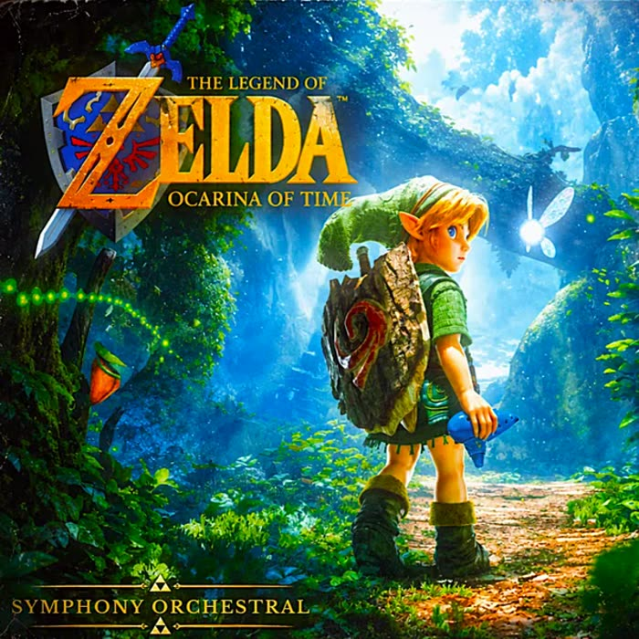

Zelda Ocarina of Time - Symphony
Symphonic orchestral arrangements of the music from The Legend of Zelda: Ocarina of Time, the 1998 Nintendo 64 adventure. 31 tracks with 20-second previews.
Get this album- 1Title Theme
- 2Kokiri Forest
- 3House
- 4Shop
- 5Deku Tree
- 6Kaepora Gaebora
- 7Hyrule Field
- 8Market
- 9Shooting Gallery
- 10Hyrule Castle Courtyard
- 11Zelda's Lullaby
- 12Lon Lon Ranch
- 13Lost Woods (Saria's Song)
- 14Kakariko Village
- 15Goron City
- 16Zora's Domain
- 17Great Fairy's Fountain
- 18Minigame
- 19Potion Shop
- 20Temple of Time
- 21Sheik's Theme
- 22Windmill Hut (Song of Storms)
- 23Bolero of Fire
- 24Serenade of Water
- 25Water Temple
- 26Horse Race
- 27Gerudo Valley
- 28Kotake & Koume's Theme
- 29Nocturne of Shadow
- 30Ganondorf Battle
- 31Last Battle